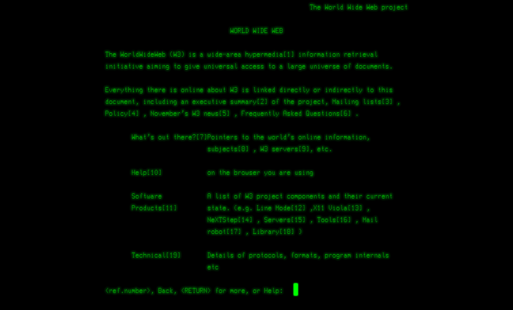
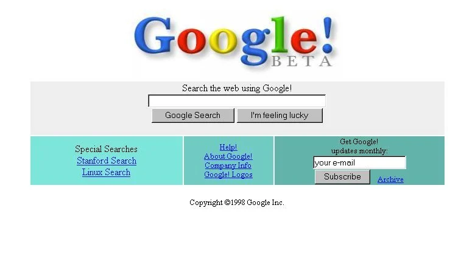

chart = {
const k = width / 80;
const r = d3.randomUniform(k, k * 4);
const n = 4;
const data = Array.from({length: 100}, (_, i) => ({r: r(), group: i && (i % n + 1)}));
const height = width / 3;
const color = d3.scaleOrdinal(d3.schemeTableau10);
const context = DOM.context2d(width, height);
const nodes = data.map(Object.create);
const simulation = d3.forceSimulation(nodes)
.alphaTarget(0.3)
.velocityDecay(0.1)
.force("x", d3.forceX().strength(0.01))
.force("y", d3.forceY().strength(0.01))
.force("collide", d3.forceCollide().radius(d => d.r + 1).iterations(3))
.force("charge", d3.forceManyBody().strength((d, i) => i ? 0 : -width * 2 / 3))
.on("tick", ticked);
d3.select(context.canvas)
.on("touchmove", event => event.preventDefault())
.on("pointermove", pointermoved);
invalidation.then(() => simulation.stop());
function pointermoved(event) {
const [x, y] = d3.pointer(event);
nodes[0].fx = x - width / 2;
nodes[0].fy = y - height / 2;
}
function ticked() {
context.clearRect(0, 0, width, height);
context.save();
context.translate(width / 2, height / 2);
for (let i = 1; i < nodes.length; ++i) {
const d = nodes[i];
context.beginPath();
context.moveTo(d.x + d.r, d.y);
context.arc(d.x, d.y, d.r, 0, 2 * Math.PI);
context.fillStyle = color(d.group);
context.fill();
}
context.restore();
}
return context.canvas;
}Qu’est ce que le web ?
Internet est né d’une initiative militaire américaine. Le premier nœud du réseau ARPANET (Advanced Research Project Agency Network) à l’origine d’Internet a été mis en place en 1969.
12 Mars 1989 : première version du Web - Tim Berners-Lee, chercheur britannique au CERN, a inventé le WWW.

A l’origine, le projet, baptisé « World Wide Web », a été conçu et développé pour que des scientifiques travaillant dans des universités et instituts du monde entier puissent s’échanger des informations instantanément.

Web ou Internet ?
Internet est une plateforme qui permet de faire parvenir des informations d’un ordinateur à un autre. Le web, lui, est un moyen de visiter des pages de sites à partir de navigateurs via des ordinateurs, des tablettes ou des smartphones.
1991 - le Web s’ouvre à tous.
En 1993, la technologie devient publique. Le Web voit très vite son usage exploser sur Internet.
fin 1994, le nombre de serveurs web atteint les 10 000 !
Le lancement de Netscape, le premier navigateur réellement grand public, participera aussi largement à sa démocratisation.

Janvier 1994 : Yahoo !
Le nombre de sites explose, à tel point qu’il devient très difficile pour l’internaute béotien de s’y retrouver. Deux étudiants de Stanford, Jerry Yang et David Filo, décident de créer un gigantesque annuaire de sites, classés de façon thématique. Il va vite devenir le portail numéro 1 de la Toile.

1998 Google lance son moteur de recherche

2010 : l’émergence du HTML5, le futur du Web

25 ans après son invention, le HTML fait une douce révolution, toujours sous l’impulsion de Tim Berners-Lee. Grâce à la cinquième version du standard de balisage des pages Web – et de nombreuses technologies associées – de nouveaux services émergent. Objectif de ce standard : transformer les pages Web, encore trop statiques, en véritables programmes informatiques, qui n’auraient rien à envier aux applications pour smartphones ou aux logiciels que vous installez sur votre ordinateur. Et faire du navigateur l’unique appli dont vous aurez besoin.
Aujourd’hui
Plus de 4 milliard d’utilisateurs